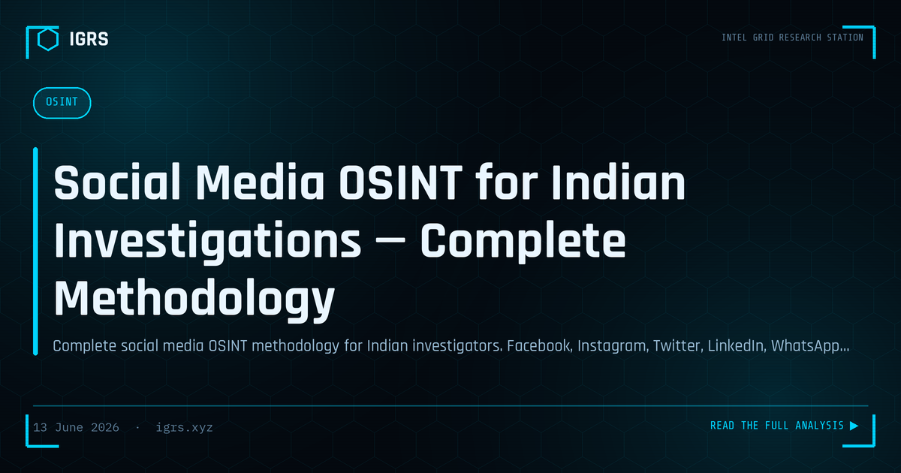

Social Media OSINT for Indian Investigations — Complete Methodology
Social media platforms are the primary arena for modern cybercrime in India — from digital arrest scams conducted via WhatsApp to investment fraud on Instagram to defamation on Facebook. This guide covers complete OSINT methodology for Indian investigators.
Facebook Investigation
Profile Analysis
- Profile URL contains numeric user ID — use graph.facebook.com/[ID] for basic data
- Photo albums — may contain location metadata if not stripped by Facebook
- Friends list — identify associates, family members
- Check-ins — historical location pattern
- About section — phone, email, workplace (often real)
Advanced Search
- Search by phone number: facebook.com/search/[phone number]
- Whopostedwhat.com — keyword search Facebook posts
- Search for posts in specific cities/times
Instagram Investigation
- Username search across platforms using Sherlock or Whatsmyname
- Tagged locations in posts — establishes presence
- Followers/following analysis — identify associates
- Bio links — may reveal website, contact
- Story highlights — permanent stories with location tags
LinkedIn Investigation
- Employment history verification — call HR to confirm
- Connection network — identifies business associates
- Post history — behavioral patterns
- Skills and endorsements — verify claimed expertise
Twitter/X Investigation
- Advanced search: from:[handle] since:[date] until:[date] geocode:[lat,long,radius]
- Account creation date via wayback machine or TwitterID tool
- Followers/following for network analysis
- Tweet metadata contains exact timestamp
Evidence Preservation
- Screenshot with browser timestamp visible
- Use Hunchly or SingleFile browser extension for complete page capture
- Hash screenshots immediately (SHA-256)
- Archive with archive.org Wayback Machine for URL preservation
- Section 63 BSA certificate required for court use
Legal Process for Account Data
All major platforms have LEA portals. Meta (Facebook/Instagram/WhatsApp): facebook.com/records. Twitter/X: help.twitter.com/forms/lawenforcement. LinkedIn: linkedin.com/help/linkedin/answer/a1344217. Google (YouTube/Gmail): google.com/transparencyreport/userdatarequests/legalprocess.
Frequently Asked Questions
How do I trace a fake Facebook account in India?
Analyze the profile URL for numeric user ID, check profile photo via reverse image search, cross-reference phone/email if listed. File LEA request at facebook.com/records for account registration IP and details. Local police can issue Meta legal process.
Can Instagram accounts be traced by police in India?
Yes. Indian police can file Law Enforcement requests to Meta (Instagram's parent) at facebook.com/records. Account registration data, IP addresses, device information, and linked phone numbers are available with proper legal process.
How long does social media evidence last?
Deleted posts can be recovered from platform server-side for 90 days (platform dependent). Screenshots taken immediately and hashed preserve evidence permanently. For court use, Section 63 BSA certificate from the platform is required.